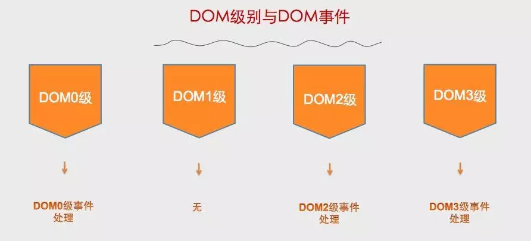
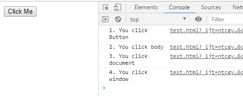
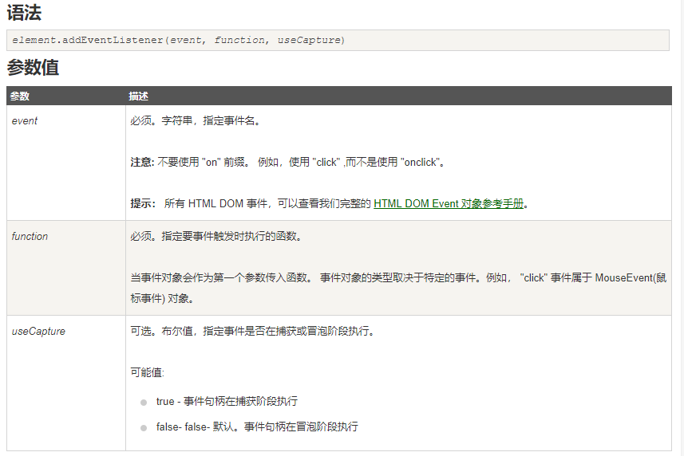
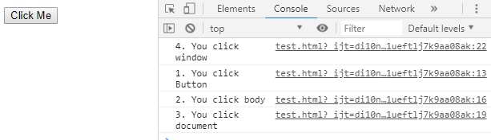
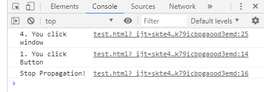

DOM 事件级别
DOM 级别分为四个级别：DOM0 级、DOM1 级、DOM2 级、DOM3 级。

DOM 事件级别分为三个级别：
- DOM0 级事件
1
2
3
4
5
6
7
8<button id="btn" type="button"></button>
<script>
var btn = document.getElementById('btn')
btn.onclick = function() {
console.log('Hello World')
}
// btn.onclick = null // 解绑事件
</script>
缺点：无法设置多个事件处理函数
- DOM2 级事件
1
2
3
4
5
6
7
8
9
10
11
12
13<button id="btn" type="button"></button>
<script>
var btn = document.getElementById('btn');
btn.addEventListener('click', showFn, false)
btn.addEventListener('click', showFn2, false)
// btn.removeEventListener('click', showFn, false) // 解绑事件
function showFn() {
alert('Hello World');
}
function showFn2() {
alert('Hello World2');
}
</script>
可以为事件设置多个事件处理函数，可以通过第三个参数 ( useCapture ) 设置在什么阶段执行事件处理函数，默认是 false， 即在事件冒泡阶段执行事件处理函数。
需要注意的是在 IE8 及以下版本需要用 attachEvent 和 detachEvent 实现，只有两个参数，事件名需要以 on 开头，只支持在事件冒泡阶段执行事件处理函数。
- DOM3 级事件
DOM3 级事件是在 DOM2 级事件的基础上添加了更多的事件类型，允许自定义事件。
- UI事件，当用户与页面上的元素交互时触发，如：load、scroll
- 焦点事件，当元素获得或失去焦点时触发，如：blur、focus
- 鼠标事件，当用户通过鼠标在页面执行操作时触发如：dbclick、mouseup
- 滚轮事件，当使用鼠标滚轮或类似设备时触发，如：mousewheel
- 文本事件，当在文档中输入文本时触发，如：textInput
- 键盘事件，当用户通过键盘在页面上执行操作时触发，如：keydown、keypress
- 合成事件，当为IME（输入法编辑器）输入字符时触发，如：compositionstart
- 变动事件，当底层DOM结构发生变化时触发，如：DOMsubtreeModified
1 | // 自定义事件 |
DOM 事件流
想象画在一张纸上的一组同心圆。如果把手指放在圆心上，那么手指指向的不仅仅是一个圆，而是纸上的所有圆。所以如果点击了某个按钮，点击事件不仅仅发生在这个按钮上，整个页面也被点击了。
事件流又称为事件传播，描述的是从页面中接收事件的顺序。DOM2 级事件规定事件流包括三个阶段: 事件捕获(capturing phase)、目标事件(target phase)、事件冒泡(bubbling phase)。
因为有两种观点，所以事件流也有两种，分别是事件冒泡和事件捕获。现行的主流是事件冒泡。
事件冒泡
事件冒泡即事件开始时，由最具体的元素接收（也就是事件发生所在的节点），然后逐级传播到较为不具体的节点。
举个栗子，就很容易明白了。
1 |
|
然后，我们给button和它的父元素，加入点击事件。1
2
3
4
5
6
7
8
9
10
11
12
13
14var button = document.getElementById('clickMe');
button.onclick = function() {
console.log('1. You click Button');
};
document.body.onclick = function() {
console.log('2. You click body');
};
document.onclick = function() {
console.log('3. You click document');
};
window.onclick = function() {
console.log('4. You click window');
};
结果如下图所示：

也就是说，click事件首先在button元素上发生，然后逐级向上传播。这就是事件冒泡。
事件捕获
事件捕获的概念，与事件冒泡正好相反。它认为当某个事件发生时，父元素应该更早接收到事件，具体元素则最后接收到事件。比如说刚才的demo，如果是事件捕获的话，事件发生顺序会和上面相反。
当然，由于时代更迭，事件冒泡方式更胜一筹。所以放心的使用事件冒泡，有特殊需要再使用事件捕获即可。
addEventlistener在事件流中的运用
addEventlistener的定义以及参数：

改用事件捕获模式
例如，将上面的例子修改一下：1
2
3window.addEventListener('click', function() {
console.log('4. You click window');
}, true);//useCapture位设置为true，使用事件捕获模式
结果：

阻止事件冒泡
再比如，事件冒泡过程，是可以被阻止的。防止事件冒泡而带来不必要的错误和困扰。
这个方法就是:stopPropagation()
我们对button的click事件做一些改造：1
2
3
4
5
6button.addEventListener('click', function(event) {
// event为事件对象
console.log('1. You click Button');
event.stopPropagation();
console.log('Stop Propagation!');
}, false);
结果如下：

不难看出，事件在到达具体元素后，停止了冒泡。但不影响父元素的事件捕获。
参考
https://juejin.im/post/5c4bd01fe51d45522b4f6e4e#heading-5
https://segmentfault.com/a/1190000004463384